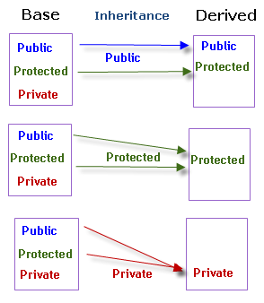

Информатика
Тема 9
Программирование на C++: наследование и полиморфизм
Агенда
- Наследование
- Полиморфизм
- Контейнеры и итераторы
Наследование
Наследование в ООП
Возможность переиспользования данных и функций одного класса в другом
Модификаторы доступа
Полиморфизм
Полиморфизм в ООП
Возможность одинаково взаимодейстовать с объектами разных классов
static_cast
статическое преобразование типов
dynamic_cast
динамическое преобразование указателей и ссылок
Контейнеры и итераторы
Контейнеры
Библиотека контейнеров — часть стандартной библиотеки C++, которая содержит классы различных структур данных (контейнеров)
Итераторы
Интератор — обобщение указателя, которое позволяет единообразно работать со структурами данных (контейнерами)
Vector
в стандартной библиотеке C++